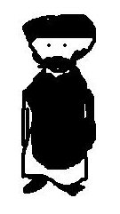

Monday, February the 12th, 2007
back to: title, date or indexes
There is another flurry of outrage, in Cambridge this time, because someone has published a picture of a seventh-century mystic. Apparently, it is absolutely forbidden to draw pictures of “the prophet Mohammed”, as the mystic is known. (I worry about that definite article, as I'm sure there have been other prophets from time to time.) Back in September 2006 (scroll down to Blodgett's Jihad) we published a picture of this fellow, and it seems like a good idea to reprint it now, if only to remind readers just how outrageous such depictions are. When you have stopped quaking with fury—and outrage, of course—you can go and read this.
